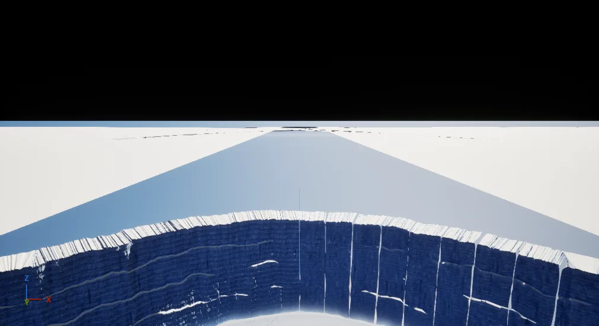

Devlog · World & Systems
While the ships learned to carry players, the world around them got weather, a shared day, more than thirty regions and an edge. Here is what works, what broke, and what is still only built.
A moving city needs somewhere worth moving through. This post covers the world work from 21 September to 3 October. As always, each item carries its real status: verified in play, compiled and loaded in the editor, or built and not yet tested.
Before any code, the founder set how snow should behave. These are founder decisions:
Shared trails were verified on 22 September. The wading effect, where your body actually sinks into the snow, compiled and loaded the same day, and then the founder found it wrong in play: he could not jump or run at all. A probe read 101 cm of snow right at the spawn point. That set the speed multiplier to 0.222, which left a top speed of 89 against a jump threshold of 90. One unit short of jumping. It is patched and loaded, and waiting on a fresh play test.
Trails also needed to look like trails. The founder tuned the trench a player cuts through deep snow in five steps until it read right: 84 cm wide with 27 cm ramps at about 42 degrees. His sign off: "ok this is good for now, we'll come back to snow." We also tried pushing that trench into the actual landscape geometry with displacement. It produced holes, spikes a metre tall and an editor crash, so it is parked.
Snowfall went from one flat layer to six on 24 and 25 September, falling live across two test tiles, and it is verified in play. Getting there took three bugs, each found by reading the effect's stack rather than guessing:
The first real measurement: 8,238 GPU dispatch groups against an estimate of 8,000, and 0.194 ms of GPU time for the snow simulation. The frame around it was 91.49 ms, slow for reasons unrelated to snow, so we are not claiming a frame budget from it yet.
Rain version two arrived on 3 October: five emitters, compiling clean with zero errors and zero warnings. It was effectively invisible on screen. Each streak texture was only about 0.2 centimetres wide. Once the streaks were visible, most drops died in mid air because their collision radius was far too large, until it was scaled down to 0.05. It has been seen in play once, but the test level was not saved and no log line records it, so we call it seen, not verified.
On 29 September the founder decided the day: five hours of daylight per cycle, with the length of the night still being settled. More important than the length is the clock. The sky runs on the simulation's own 30 frame a second clock, the same one that moves every Strider, not on anyone's wall clock. Every player in a realm sees the same sun at the same moment. This is compiled and loaded in the editor, and not yet verified in play.
Fourteen regions were built, watered and scattered with trees and rock between 24 and 25 September, and seventeen more by 30 September. Each passes its landscape checks in the editor. None has been walked in play yet. On 30 September the full disc level gained 35 region slots, placed with zero centimetres of error, but nothing has streamed in at runtime yet.
That work also broke one of our own rules. Streaming and level of detail budgets are supposed to be set before content, not after. The disc work wrote 967 files and about 240 MB of data before a budget existed. A draft budget now exists, and the plan is to settle it before the next content pass.
Then the edge. On 1 October an ice rim went around the whole disc: 56 pieces covering 7,369 kilometres. That morning the founder decided players could climb the ice and land on top of it. By afternoon he reversed it: nobody gets over the ice. The rim was rebuilt the same day as ten stepped shelves around 2,500 metres high, a 40 metre lip, and a barrier above it.

Header image: COGHEIM concept art of a frozen landscape, not an in engine capture.
Snow you leave a trail in. A sun everyone sees at once. A world that remembers you passed through.
← All Devlog Posts